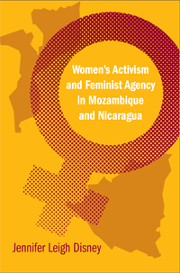

<body bgcolor="#FFFFFF" text="#000000" link="#0000FF" vlink="#CC0000" alink="#CC0000"><center><hr width="350" size="1" align="center" noshade>Tracking women�s movements through two developing world revolutions and neo-liberal democracies<hr width="350" size="1" align="center" noshade><p><a href="https://cdcshoppingcart.uchicago.edu/Cart/ChicagoBook.aspx?ISBN=9781592138289&&PRESS=temple" target="_top">Buy this book!</a> | <a href="https://cdcshoppingcart.uchicago.edu/Cart/Cart.aspx?PRESS=temple" target="_top">View Cart</a> | <a href="https://cdcshoppingcart.uchicago.edu/Cart/Cart.aspx?PRESS=temple" target="_top">Check Out</a></p><p></p></center><!--none//--><h1>Women's Activism and Feminist Agency in Mozambique and Nicaragua</h1>
<h3>Jennifer Leigh Disney</h3>
<P>cloth 1-59213-828-4 $75.50, Aug 08, <FONT COLOR=#990033>Available</FONT>
<br>paper 1-59213-829-2 $32.95, <FONT COLOR=#990033>Available</FONT>
<br>Electronic Book 1-59213-830-6 $32.95 <FONT COLOR=#990033>Available</FONT>
<BR> 306 pp
6x9
13&nbsp;tables 2&nbsp;map(s) 2&nbsp;halftones
</P><BLOCKQUOTE><I>"</I>Women's Activism and Feminist Agency in Mozambique and Nicaragua<I> provides a compelling account of women's contributions to revolutionary struggle and social transformation in two nations, illuminating the enormity of the challenge posed by gender equality, the effects of revolution on women's and men's lives, and the increasing precariousness of social justice struggles in a globalizing world."</I>
<BR>&#151<B>Mary Hawkesworth</B>,
Professor and Chair, Department of Women's and Gender Studies, Rutgers University, and Editor in Chief, <i>Signs: Journal of Women in Culture and Society</I></BLOCKQUOTE>
<P>How and under what conditions is feminist consciousness created? What forms of mobilization foster feminist agency and what factors hinder its realization? These critical questions have been the subject of intense debate among feminist scholars in philosophy, political science, sociology, and interdisciplinary women�s studies for three decades. In this pioneering study, Jennifer Leigh Disney contributes to this debate by tracing the mobilization of women in two revolutionary contexts, comparing the strategies and the outcomes of various organizational forms developed in Mozambique and in Nicaragua over the past 30 years.</P>
<P>By examining two socialist revolutions in the global South, Disney investigates the contours of women�s emancipation outside the framework of liberal democracy and a market economy. She interviews 146 women and men in the two countries to explore the comparative contribution of women�s participation in subsistence and informal economies, political parties and civil society organizations. She also discusses military struggles against colonialism and imperialism in fostering feminist agency to provide a fascinating look at how each movement evolved and how it changed in a post-revolutionary climate.</P>
<BR>&nbsp;<h2>Excerpt</h2><P>Excerpt available at <a href="http://www.temple.edu/tempress">www.temple.edu/tempress</a></p>
<BR>&nbsp;<h2>Reviews</h2>
<p><I>"This is an amazing cross-regional study grounded in the theories and practices of women in revolutionary and post-revolutionary contexts. Disney makes a unique and creative contribution to socialist-feminism and comparative politics by using �intersectionality� as both theory and method. As Disney argues, despite their initial lack of autonomy, women acquired political space in civil society amid, however, a shrinking state and transitions to neo-liberal capitalist economies. Students and researchers will acquire deep knowledge about a quarter century of inspiring struggles that, through Disney�s interviews, are thoroughly threaded with women�s voices."</I>
<br>&#151<b>Kathleen Staudt</b>, Professor of Political Science, University of Texas at El Paso
<p><I>"This is exactly the time to take a fresh look at what women activists engaged in the revolutionary movements of Mozambique and Nicaragua not only have achieved, but have been thinking about what obstacles have prevented them from pushing back local patriarchies further. I've found especially valuable Disney's interviews with activist women engaged in post-revolutionary party politics. Too often our collective curiosity wanders when the �excitement� is over. Jennifer Disney reveals here that post-revolutionary politics of women require our close attention."</I>
<br>&#151<b>Cynthia Enloe</b>, Research Professor, Clark University
<p><i>"Disney offers a careful analysis of women's political behavior in two culturally and linguistically distinct continental environments....explor[ing] the increasingly effective role of women in the Third World. The value of this analysis is enhanced by its extensive bibliography, useful and informative footnotes, and careful interviews." </I>
<br>&#151<b><i>Choice</b></i>
<p><i>"Disney scholarship is a thorough account of women�s activism and mobilization from the perspectives of the women involved, making it a valuable contribution to the growing body of global feminist literature....[H]er novel and interesting choices of Mozambique and Nicaragua as case studies, as well as her first-rate comparative analysis, yields insightful, valuable, and relevant information about women�s mobilization beyond these two countries. Moreover, her research is theoretically useful to the study of women�s mobilization and feminist agency worldwide. This book is a solid piece of scholarship that would be useful reading for college courses on gender and development, global feminisms, feminist theory, and post-revolutionary politics." </I>
<br>&#151<b><i>Politics and Gender</b></i>
<p><i>"This book will serve as a wonderful resource on the women�s movements in Nicaragua and Mozambique. It makes important and insightful contributions to debates over women�s role in military combat and debates in feminism over how activists can overcome the culture/economy divides of the 1990s. It also sheds light on the dynamics of Marxist revolutionary parties and movements in a neoliberal world order, posing questions about the role of electoral politics and national sovereignty in a fast changing world.... Disney contributes significantly to social movement literatures on organizational dynamics and offers a valuable methodological contribution by demonstrating the value of a cross-national historical comparison." </I>
<br>&#151<b><i>New Political Science</b></i>
<BR>&nbsp;<h2>Contents</h2><P>
<br>List of Maps and Tables
<br>Preface
<br>Acknowledgements
<br>List of Acronyms
<br>1. "Women Must Occupy and Give Themselves the Place They Deserve"
<br><i>Women's Activism and Feminist Agency in Mozambique and Nicaragua</i>
<br>2. "After Acknowledging Differences, We Must Also See What We Have in Common"
<br><i>Feminist Contestations and Commonalities across First World/Third World, African, and Latin American Divides</i>
<br>3. "Doing a Revolution Doesn't Stop You from Being Machista"
<br><i>The Birth of Revolutionary Women's Organizations and the Limits of Marxism-Leninism in Mozambique and Nicaragua</i>
<br>4. "Women are Not Cows&#8212;We Are Active Agents of History"
<br><i>Autonomy Struggles Emerge in Mozambique and Nicaragua</i>
<br>5. "The Oppressed Woman Is Easier to Deal With"
<br><i>Political Participation, Legal Reforms, and Cultural Constraints in Mozambique and Nicaragua</i>
<br>6. "I Can Do Anything a Man Can Do"
<br><i>Military Participation, Economic Production, and Women's Emancipation in Mozambique and Nicaragua</i>
<br>7. "There Are No Alternatives: Is This Really Democracy?"
<br><i>Democratization and Civil Society in Mozambique and Nicaragua</i>
<br>8. "Partners in the Home, at Work, and on the Street"
<br><i>The Contemporary Women's Movements and Emergent Feminisms in Mozambique and Nicaragua</i>
<br>Appendix
<br>Notes
<br>Bibliography
<br>Index
</P><BR>&nbsp;<H2>About the Author(s)</H2>
<table><tr><td valign="top"><img src="/tempress/authors/1968_au.gif" height="90" width="75"></td><td width="100%" valign="middle"><p><B>Jennifer Leigh Disney</B>is Associate Professor of Political Science at Winthrop University. She has been the recipient of the American Political Science Association (APSA) Women and Politics Best Dissertation Award and New Political Science Christian Bay Best Paper Award.</P></td></tr></table>
<BR><H2>Subject Categories</H2>
<p><A HREF="/tempress/political.html" TARGET="_top">Political Science and Public Policy</a>
<BR><A HREF="/tempress/women.html" TARGET="_top">Women's Studies</a>
<BR><A HREF="/tempress/african_studies.html" TARGET="_top">African Studies</a>
</p>
<p align="center"><a href="https://cdcshoppingcart.uchicago.edu/Cart/ChicagoBook.aspx?ISBN=9781592138289&&PRESS=temple" target="_top">Buy this book!</a> | <a href="https://cdcshoppingcart.uchicago.edu/Cart/Cart.aspx?PRESS=temple" target="_top">View Cart</a> | <a href="https://cdcshoppingcart.uchicago.edu/Cart/Cart.aspx?PRESS=temple" target="_top">Check Out</a></p><p><font face="Arial" size="1"><a href="copyright.html" onMouseOver="window.status='Web Copyright Policy';return true;" onMouseOut="window.status=''" title="Web Copyright Policy">&copy;</a> 2015 <a href="http://www.temple.edu" target="new" onMouseOver="window.status='Link to Temple University home page';return true;" onMouseOut="window.status=''" title="Link to Temple University home page">Temple University</a>. All Rights Reserved. http://www.temple.edu/tempress/titles/1968_reg.html</font></p>